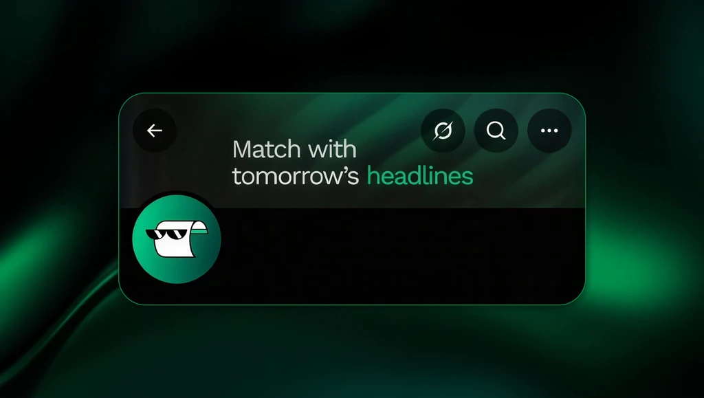
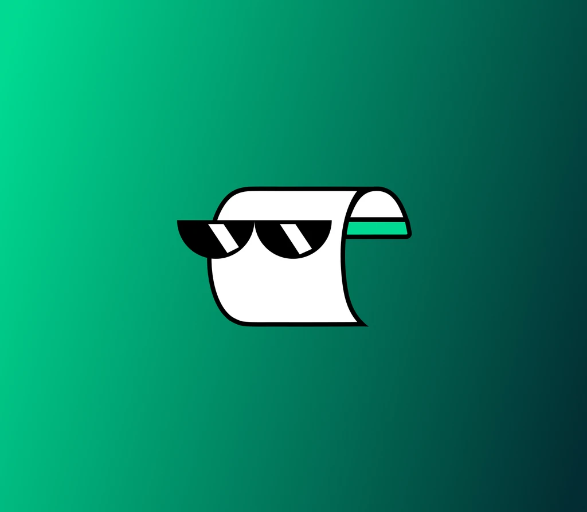
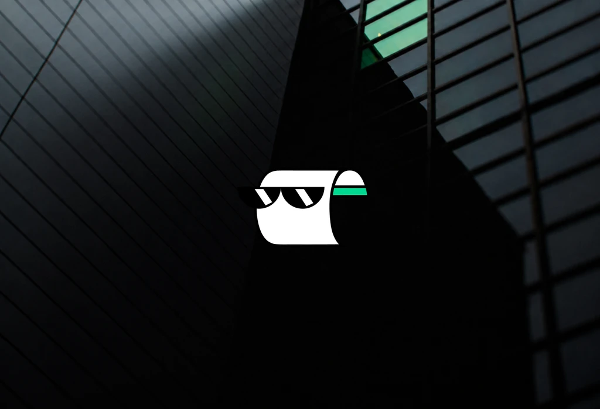

Brand Identity
The story nobody saw coming.
Leaked.news is the next expression of the same product behind Polycule.news, bringing a new name and personality to an existing idea.

01 — The Challenge
A brand that can feel credible and confident when communicating information, but still has enough personality, humour and attitude to avoid feeling like a traditional news brand.
A brand that can feel credible and confident when communicating information, but still has enough personality, humour and attitude to avoid feeling like a traditional news brand.
The identity had to work as a serious information source and as something people would actually share.
02 — The Process
Designing beyond individual screens.
Bold enough to be noticed. Simple enough to last. We built the identity around a wordmark that survives at small sizes and in motion.
Serious when it matters. Unserious when it shouldn’t. The system carries two registers without splitting the brand.
We extended the identity into the social space, where most of the audience meets the product first.
Bold enough to be noticed
Simple enough to last.
Serious when it matters
Unserious when it shouldn${AP}t.
An identity beyond the interface
Carrying the brand across app, web and social.
Extending into social
Where most of the audience meets the product first.
03 — The Result
Extending the product language beyond the app.
An identity that exists beyond the interface, holding together across app, web and social.
Extending the identity into the social space gave the brand a consistent voice wherever it appears.
The result is a news brand with attitude that still reads as trustworthy.
04 — Gallery
Selected frames.



